The marginaleffects package offers convenience functions
to compute and display predictions, contrasts, and marginal effects from
bayesian models estimated by the brms package. To compute
these quantities, marginaleffects relies on workhorse
functions from the brms package to draw from the posterior
distribution. The type of draws used is controlled by using the
type argument of the predictions or
slopes functions:
-
type = "response": Compute posterior draws of the expected value using thebrms::posterior_epredfunction. -
type = "link": Compute posterior draws of the linear predictor using thebrms::posterior_linpredfunction. -
type = "prediction": Compute posterior draws of the posterior predictive distribution using thebrms::posterior_predictfunction.
The predictions and slopes functions can
also pass additional arguments to the brms prediction
functions via the ... ellipsis. For example, if
mod is a mixed-effects model, then this command will
compute 10 draws from the posterior predictive distribution, while
ignoring all group-level effects:
predictions(mod, type = "prediction", ndraws = 10, re_formula = NA)See the brms documentation for a list of available
arguments:
?brms::posterior_epred
?brms::posterior_linpred
?brms::posterior_predictLogistic regression with multiplicative interactions
Load libraries and download data on passengers of the Titanic from the Rdatasets archive:
library(marginaleffects)
library(brms)
library(ggplot2)
library(ggdist)
dat <- read.csv("https://vincentarelbundock.github.io/Rdatasets/csv/carData/TitanicSurvival.csv")
dat$survived <- ifelse(dat$survived == "yes", 1, 0)
dat$woman <- ifelse(dat$sex == "female", 1, 0)Fit a logit model with a multiplicative interaction:
Adjusted predictions
We can compute adjusted
predicted values of the outcome variable (i.e., probability of
survival aboard the Titanic) using the predictions
function. By default, this function calculates predictions for each row
of the dataset:
pred <- predictions(mod)
head(pred)
#>
#> Estimate 2.5 % 97.5 %
#> 0.9367 0.9070 0.9590
#> 0.8493 0.7453 0.9187
#> 0.9433 0.8949 0.9704
#> 0.5131 0.4302 0.6000
#> 0.9375 0.9080 0.9601
#> 0.2731 0.2029 0.3518
#>
#> Prediction type: response
#> Columns: rowid, type, estimate, conf.low, conf.high, survived, woman, age, passengerClassTo visualize the relationship between the outcome and one of the
regressors, we can plot conditional adjusted predictions with the
plot_predictions function:
plot_predictions(mod, condition = "age")
Compute adjusted predictions for some user-specified values of the
regressors, using the newdata argument and the
datagrid function:
pred <- predictions(mod,
newdata = datagrid(woman = 0:1,
passengerClass = c("1st", "2nd", "3rd")))
pred
#>
#> Estimate 2.5 % 97.5 % woman passengerClass
#> 0.5149 0.43192 0.6019 0 1st
#> 0.2013 0.15362 0.2613 0 2nd
#> 0.0875 0.06556 0.1141 0 3rd
#> 0.9364 0.90661 0.9588 1 1st
#> 0.7783 0.70897 0.8346 1 2nd
#> 0.5701 0.49378 0.6442 1 3rd
#>
#> Prediction type: response
#> Columns: rowid, type, estimate, conf.low, conf.high, survived, age, woman, passengerClassThe posterior_draws function samples from the posterior
distribution of the model, and produces a data frame with
drawid and draw columns.
pred <- posterior_draws(pred)
head(pred)
#> drawid draw rowid type estimate conf.low conf.high survived age woman passengerClass
#> 1 1 0.46566713 1 response 0.51492993 0.43192231 0.6018749 0.4082218 29.88113 0 1st
#> 2 1 0.16658900 2 response 0.20128833 0.15362308 0.2613351 0.4082218 29.88113 0 2nd
#> 3 1 0.08750961 3 response 0.08750369 0.06555724 0.1141134 0.4082218 29.88113 0 3rd
#> 4 1 0.93735755 4 response 0.93641346 0.90660921 0.9587589 0.4082218 29.88113 1 1st
#> 5 1 0.77437334 5 response 0.77829290 0.70896643 0.8346419 0.4082218 29.88113 1 2nd
#> 6 1 0.62216334 6 response 0.57010265 0.49377997 0.6441967 0.4082218 29.88113 1 3rdThis “long” format makes it easy to plots results:
ggplot(pred, aes(x = draw, fill = factor(woman))) +
geom_density() +
facet_grid(~ passengerClass, labeller = label_both) +
labs(x = "Predicted probability of survival", y = "", fill = "Woman")
Marginal effects
Use slopes() to compute
marginal effects (slopes of the regression equation) for each row of
the dataset, and use ) to compute “Average Marginal
Effects”, that is, the average of all observation-level marginal
effects:
mfx <- slopes(mod)
mfx
#>
#> Term Contrast Estimate 2.5 % 97.5 %
#> woman dY/dX 0.1529810 0.1088301 0.2051898
#> woman dY/dX 0.1354646 0.0360765 0.2970409
#> woman dY/dX 0.0587891 0.0287561 0.1009453
#> woman dY/dX 0.6545371 0.5669930 0.7442501
#> woman dY/dX 0.1382874 0.0972243 0.1863969
#> --- 4174 rows omitted. See ?avg_slopes and ?print.marginaleffects ---
#> passengerClass 3rd - 1st -0.2642843 -0.3397125 -0.1986620
#> passengerClass 3rd - 1st -0.3527451 -0.4262574 -0.2823186
#> passengerClass 3rd - 1st -0.4593140 -0.5506994 -0.3695048
#> passengerClass 3rd - 1st -0.4549515 -0.5463443 -0.3652652
#> passengerClass 3rd - 1st -0.4364994 -0.5260837 -0.3497621
#>
#> Prediction type: response
#> Columns: rowid, type, term, contrast, estimate, conf.low, conf.high, predicted, predicted_hi, predicted_lo, survived, woman, age, passengerClass, epsCompute marginal effects with some regressors fixed at user-specified values, and other regressors held at their means:
slopes(
mod,
newdata = datagrid(
woman = 1,
passengerClass = "1st"))
#>
#> Term Contrast Estimate 2.5 % 97.5 % woman passengerClass
#> woman dY/dX 0.1562784 0.111359 0.208756 1 1st
#> age dY/dX -0.0002383 -0.001355 0.000871 1 1st
#> passengerClass 2nd - 1st -0.1574416 -0.223275 -0.102890 1 1st
#> passengerClass 3rd - 1st -0.3653764 -0.438319 -0.294769 1 1st
#>
#> Prediction type: response
#> Columns: rowid, type, term, contrast, estimate, conf.low, conf.high, predicted, predicted_hi, predicted_lo, survived, age, woman, passengerClass, epsCompute and plot conditional marginal effects:
plot_slopes(mod, effect = "woman", condition = "age")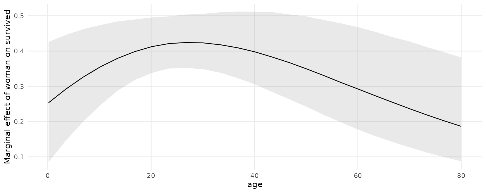
The posterior_draws produces a dataset with
drawid and draw columns:
draws <- posterior_draws(mfx)
dim(draws)
#> [1] 16736000 17
head(draws)
#> drawid draw rowid type term contrast estimate conf.low conf.high predicted predicted_hi predicted_lo survived woman age passengerClass eps
#> 1 1 0.1633609 1 response woman dY/dX 0.15298096 0.10883007 0.2051898 0.9366604 0.9366751 0.9366604 1 1 29.0000 1st 1e-04
#> 2 1 0.1359009 2 response woman dY/dX 0.13546458 0.03607654 0.2970409 0.8493050 0.8493174 0.8493050 1 0 0.9167 1st 1e-04
#> 3 1 0.0615405 3 response woman dY/dX 0.05878909 0.02875607 0.1009453 0.9433293 0.9433358 0.9433293 0 1 2.0000 1st 1e-04
#> 4 1 0.7088821 4 response woman dY/dX 0.65453708 0.56699300 0.7442501 0.5131011 0.5131652 0.5131011 0 0 30.0000 1st 1e-04
#> 5 1 0.1473759 5 response woman dY/dX 0.13828737 0.09722433 0.1863969 0.9374937 0.9375085 0.9374937 0 1 25.0000 1st 1e-04
#> 6 1 0.6635099 6 response woman dY/dX 0.70740470 0.58935737 0.8406470 0.2730542 0.2731252 0.2730542 1 0 48.0000 1st 1e-04We can use this dataset to plot our results. For example, to plot the
posterior density of the marginal effect of age when the
woman variable is equal to 0 or 1:
mfx <- slopes(mod,
variables = "age",
newdata = datagrid(woman = 0:1)) |>
posterior_draws()
ggplot(mfx, aes(x = draw, fill = factor(woman))) +
stat_halfeye(slab_alpha = .5) +
labs(x = "Marginal Effect of Age on Survival",
y = "Posterior density",
fill = "Woman")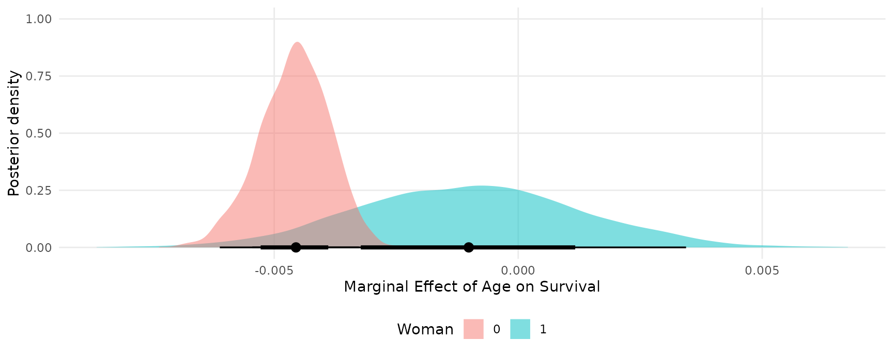
Random effects model
This section replicates some of the analyses of a random effects
model published in Andrew Heiss’ blog post: “A
guide to correctly calculating posterior predictions and average
marginal effects with multilevel Bayesian models.” The objective is
mainly to illustrate the use of marginaleffects. Please
refer to the original post for a detailed discussion of the quantities
computed below.
Load libraries and download data:
library(brms)
library(ggdist)
library(patchwork)
library(marginaleffects)
vdem_2015 <- read.csv("https://github.com/vincentarelbundock/marginaleffects/raw/main/data-raw/vdem_2015.csv")
head(vdem_2015)
#> country_name country_text_id year region media_index party_autonomy_ord polyarchy civil_liberties party_autonomy
#> 1 Mexico MEX 2015 Latin America and the Caribbean 0.837 3 0.631 0.704 TRUE
#> 2 Suriname SUR 2015 Latin America and the Caribbean 0.883 4 0.777 0.887 TRUE
#> 3 Sweden SWE 2015 Western Europe and North America 0.956 4 0.915 0.968 TRUE
#> 4 Switzerland CHE 2015 Western Europe and North America 0.939 4 0.901 0.960 TRUE
#> 5 Ghana GHA 2015 Sub-Saharan Africa 0.858 4 0.724 0.921 TRUE
#> 6 South Africa ZAF 2015 Sub-Saharan Africa 0.898 4 0.752 0.869 TRUEFit a basic model:
mod <- brm(
bf(media_index ~ party_autonomy + civil_liberties + (1 | region),
phi ~ (1 | region)),
data = vdem_2015,
family = Beta(),
control = list(adapt_delta = 0.9))Posterior predictions
To compute posterior predictions for specific values of the
regressors, we use the newdata argument and the
datagrid function. We also use the type
argument to compute two types of predictions: accounting for residual
(observation-level) residual variance (prediction) or
ignoring it (response).
nd = datagrid(model = mod,
party_autonomy = c(TRUE, FALSE),
civil_liberties = .5,
region = "Middle East and North Africa")
p1 <- predictions(mod, type = "response", newdata = nd) |>
posterior_draws()
p2 <- predictions(mod, type = "prediction", newdata = nd) |>
posterior_draws()
pred <- rbind(p1, p2)Extract posterior draws and plot them:
ggplot(pred, aes(x = draw, fill = party_autonomy)) +
stat_halfeye(alpha = .5) +
facet_wrap(~ type) +
labs(x = "Media index (predicted)",
y = "Posterior density",
fill = "Party autonomy")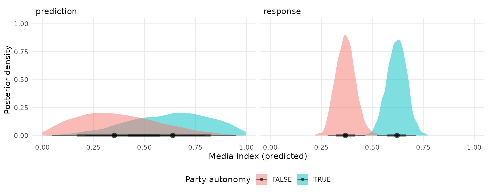
Marginal effects and contrasts
As noted in the Marginal
Effects vignette, there should be one distinct marginal effect for
each combination of regressor values. Here, we consider only one
combination of regressor values, where region is “Middle
East and North Africa”, and civil_liberties is 0.5. Then,
we calculate the mean of the posterior distribution of marginal
effects:
mfx <- slopes(mod,
newdata = datagrid(civil_liberties = .5,
region = "Middle East and North Africa"))
mfx
#>
#> Term Contrast Estimate 2.5 % 97.5 % civil_liberties region
#> party_autonomy TRUE - FALSE 0.2517 0.1663 0.3356 0.5 Middle East and North Africa
#> civil_liberties dY/dX 0.8160 0.6214 1.0066 0.5 Middle East and North Africa
#>
#> Prediction type: response
#> Columns: rowid, type, term, contrast, estimate, conf.low, conf.high, predicted, predicted_hi, predicted_lo, media_index, party_autonomy, civil_liberties, region, epsUse the posterior_draws() to extract draws from the
posterior distribution of marginal effects, and plot them:
mfx <- posterior_draws(mfx)
ggplot(mfx, aes(x = draw, y = term)) +
stat_halfeye() +
labs(x = "Marginal effect", y = "")
Plot marginal effects, conditional on a regressor:
plot_slopes(mod,
effect = "civil_liberties",
condition = "party_autonomy")
Continuous predictors
pred <- predictions(mod,
newdata = datagrid(party_autonomy = FALSE,
region = "Middle East and North Africa",
civil_liberties = seq(0, 1, by = 0.05))) |>
posterior_draws()
ggplot(pred, aes(x = civil_liberties, y = draw)) +
stat_lineribbon() +
scale_fill_brewer(palette = "Reds") +
labs(x = "Civil liberties",
y = "Media index (predicted)",
fill = "")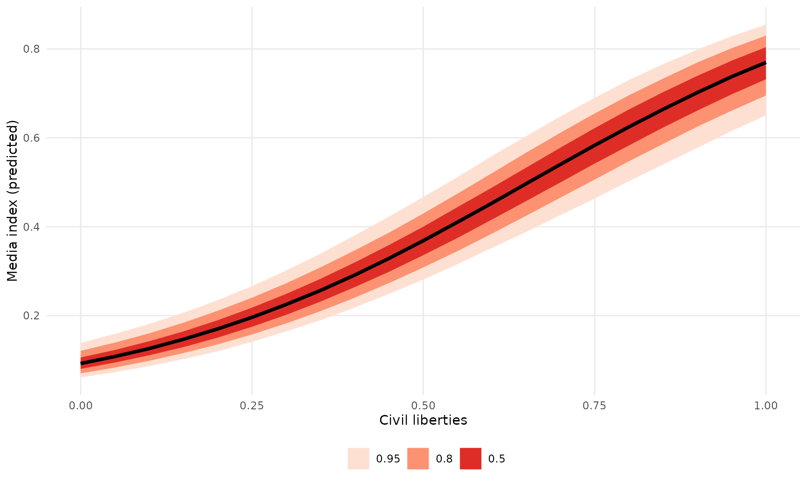
The slope of this line for different values of civil liberties can be obtained with:
mfx <- slopes(mod,
newdata = datagrid(
civil_liberties = c(.2, .5, .8),
party_autonomy = FALSE,
region = "Middle East and North Africa"),
variables = "civil_liberties")
mfx
#>
#> Term Estimate 2.5 % 97.5 % civil_liberties party_autonomy region
#> civil_liberties 0.4900 0.3609 0.6388 0.2 FALSE Middle East and North Africa
#> civil_liberties 0.8071 0.6122 0.9927 0.5 FALSE Middle East and North Africa
#> civil_liberties 0.8069 0.6745 0.9337 0.8 FALSE Middle East and North Africa
#>
#> Prediction type: response
#> Columns: rowid, type, term, estimate, conf.low, conf.high, predicted, predicted_hi, predicted_lo, media_index, civil_liberties, party_autonomy, region, epsAnd plotted:
mfx <- posterior_draws(mfx)
ggplot(mfx, aes(x = draw, fill = factor(civil_liberties))) +
stat_halfeye(slab_alpha = .5) +
labs(x = "Marginal effect of Civil Liberties on Media Index",
y = "Posterior density",
fill = "Civil liberties")
The slopes function can use the ellipsis
(...) to push any argument forward to the
posterior_predict function. This can alter the types of
predictions returned. For example, the
re_formula=NA argument of the
posterior_predict.brmsfit method will compute
marginaleffects without including any group-level effects:
mfx <- slopes(
mod,
newdata = datagrid(
civil_liberties = c(.2, .5, .8),
party_autonomy = FALSE,
region = "Middle East and North Africa"),
variables = "civil_liberties",
re_formula = NA) |>
posterior_draws()
ggplot(mfx, aes(x = draw, fill = factor(civil_liberties))) +
stat_halfeye(slab_alpha = .5) +
labs(x = "Marginal effect of Civil Liberties on Media Index",
y = "Posterior density",
fill = "Civil liberties")
Global grand mean
pred <- predictions(
mod,
re_formula = NA,
newdata = datagrid(party_autonomy = c(TRUE, FALSE))) |>
posterior_draws()
mfx <- slopes(
mod,
re_formula = NA,
variables = "party_autonomy") |>
posterior_draws()
plot1 <- ggplot(pred, aes(x = draw, fill = party_autonomy)) +
stat_halfeye(slab_alpha = .5) +
labs(x = "Media index (Predicted)",
y = "Posterior density",
fill = "Party autonomy")
plot2 <- ggplot(mfx, aes(x = draw)) +
stat_halfeye(slab_alpha = .5) +
labs(x = "Contrast: Party autonomy TRUE - FALSE",
y = "",
fill = "Party autonomy")
# combine plots using the `patchwork` package
plot1 + plot2
Region-specific predictions and contrasts
Predicted media index by region and level of civil liberties:
pred <- predictions(mod,
newdata = datagrid(region = vdem_2015$region,
party_autonomy = FALSE,
civil_liberties = seq(0, 1, length.out = 100))) |>
posterior_draws()
ggplot(pred, aes(x = civil_liberties, y = draw)) +
stat_lineribbon() +
scale_fill_brewer(palette = "Reds") +
facet_wrap(~ region) +
labs(x = "Civil liberties",
y = "Media index (predicted)",
fill = "")
Predicted media index by region and level of civil liberties:
pred <- predictions(mod,
newdata = datagrid(region = vdem_2015$region,
civil_liberties = c(.2, .8),
party_autonomy = FALSE)) |>
posterior_draws()
ggplot(pred, aes(x = draw, fill = factor(civil_liberties))) +
stat_halfeye(slab_alpha = .5) +
facet_wrap(~ region) +
labs(x = "Media index (predicted)",
y = "Posterior density",
fill = "Civil liberties")
Predicted media index by region and party autonomy:
pred <- predictions(mod,
newdata = datagrid(region = vdem_2015$region,
party_autonomy = c(TRUE, FALSE),
civil_liberties = .5)) |>
posterior_draws()
ggplot(pred, aes(x = draw, y = region , fill = party_autonomy)) +
stat_halfeye(slab_alpha = .5) +
labs(x = "Media index (predicted)",
y = "",
fill = "Party autonomy")
TRUE/FALSE contrasts (marginal effects) of party autonomy by region:
mfx <- slopes(
mod,
variables = "party_autonomy",
newdata = datagrid(
region = vdem_2015$region,
civil_liberties = .5)) |>
posterior_draws()
ggplot(mfx, aes(x = draw, y = region , fill = party_autonomy)) +
stat_halfeye(slab_alpha = .5) +
labs(x = "Media index (predicted)",
y = "",
fill = "Party autonomy")
Hypothetical groups
We can also obtain predictions or marginal effects for a hypothetical
group instead of one of the observed regions. To achieve this, we create
a dataset with NA in the region column. Then
we call the marginaleffects or predictions
functions with the allow_new_levels argument. This argument
is pushed through via the ellipsis (...) to the
posterior_epred function of the brms
package:
dat <- data.frame(civil_liberties = .5,
party_autonomy = FALSE,
region = "New Region")
mfx <- slopes(
mod,
variables = "party_autonomy",
allow_new_levels = TRUE,
newdata = dat)
draws <- posterior_draws(mfx)
ggplot(draws, aes(x = draw)) +
stat_halfeye() +
labs(x = "Marginal effect of party autonomy in a generic world region", y = "")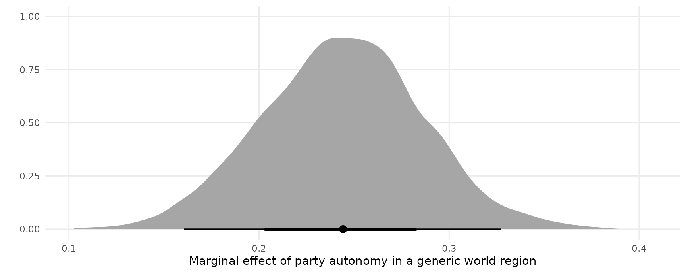
Averaging, marginalizing, integrating random effects
Consider a logistic regression model with random effects:
dat <- read.csv("https://vincentarelbundock.github.io/Rdatasets/csv/plm/EmplUK.csv")
dat$x <- as.numeric(dat$output > median(dat$output))
dat$y <- as.numeric(dat$emp > median(dat$emp))
mod <- brm(y ~ x + (1 | firm), data = dat, backend = "cmdstanr", family = "bernoulli")We can compute adjusted predictions for a given value of
x and for each firm (random effects) as follows:
p <- predictions(mod, newdata = datagrid(x = 0, firm = unique))
head(p)
#>
#> Estimate 2.5 % 97.5 % x firm
#> 1.000e+00 9.012e-01 1.000000 0 1
#> 1.000e+00 8.947e-01 1.000000 0 2
#> 1.000e+00 9.121e-01 1.000000 0 3
#> 1.000e+00 7.971e-01 1.000000 0 4
#> 1.000e+00 9.090e-01 1.000000 0 5
#> 4.899e-08 8.418e-21 0.001898 0 6
#>
#> Prediction type: response
#> Columns: rowid, type, estimate, conf.low, conf.high, y, x, firmWe can average/marginalize/integrate across random effects with the
avg_predictions() function or the by
argument:
avg_predictions(mod, newdata = datagrid(x = 0, firm = unique))
#>
#> Estimate 2.5 % 97.5 %
#> 0.4539 0.4396 0.4683
#>
#> Prediction type: response
#> Columns: type, estimate, conf.low, conf.high
predictions(mod, newdata = datagrid(x = 0:1, firm = unique), by = "x")
#>
#> x Estimate 2.5 % 97.5 %
#> 0 0.4539 0.4396 0.4683
#> 1 0.5572 0.5456 0.5696
#>
#> Prediction type: response
#> Columns: type, x, estimate, conf.low, conf.highWe can also draw from the (assumed gaussian) population distribution
of random effects, by asking predictions() to make
predictions for new “levels” of the random effects. If we then take an
average of predictions using avg_predictions() or the
by argument, we will have “integrated
out the random effects”, as described in the brmsmargins
package vignette. In the code below, we make predictions for 100
firm identifiers which were not in the original dataset. We also ask
predictions() to push forward the
allow_new_levels and sample_new_levels
arguments to the brms::posterior_epred function:
predictions(
mod,
newdata = datagrid(x = 0:1, firm = -1:-100),
allow_new_levels = TRUE,
sample_new_levels = "gaussian",
by = "x")
#>
#> x Estimate 2.5 % 97.5 %
#> 0 0.4523 0.3398 0.5691
#> 1 0.5508 0.4390 0.6653
#>
#> Prediction type: response
#> Columns: type, x, estimate, conf.low, conf.highWe can “integrate out” random effects in the other
slopes functions too. For instance,
avg_comparisons(
mod,
newdata = datagrid(firm = -1:-100),
allow_new_levels = TRUE,
sample_new_levels = "gaussian")
#>
#> Term Contrast Estimate 2.5 % 97.5 %
#> x 1 - 0 0.09667 0.0472 0.1596
#>
#> Prediction type: response
#> Columns: type, term, contrast, estimate, conf.low, conf.highThis is nearly equivalent the brmsmargins command output
(with slight variations due to different random seeds):
library(brmsmargins)
bm <- brmsmargins(
k = 100,
object = mod,
at = data.frame(x = c(0, 1)),
CI = .95,
CIType = "ETI",
contrasts = cbind("AME x" = c(-1, 1)),
effects = "integrateoutRE")
bm$ContrastSummary |> data.frame()
#> M Mdn LL UL PercentROPE PercentMID CI CIType ROPE MID Label
#> 1 0.09772445 0.09549438 0.04688023 0.1595691 NA NA 0.95 ETI <NA> <NA> AME xSee the alternative
software vignette for more information on
brmsmargins.
Multinomial logit
Fit a model with categorical outcome (heating system choice in California houses) and logit link:
dat <- "https://vincentarelbundock.github.io/Rdatasets/csv/Ecdat/Heating.csv"
dat <- read.csv(dat)
mod <- brm(depvar ~ ic.gc + oc.gc,
data = dat,
family = categorical(link = "logit"))Adjusted predictions
Compute predicted probabilities for each level of the outcome variable:
pred <- predictions(mod)
head(pred)
#>
#> Group Estimate 2.5 % 97.5 %
#> ec 0.06627 0.04472 0.09305
#> ec 0.07682 0.05896 0.09740
#> ec 0.10300 0.06181 0.15850
#> ec 0.06335 0.04590 0.08379
#> ec 0.07453 0.05740 0.09468
#> ec 0.07086 0.04546 0.10360
#>
#> Prediction type: response
#> Columns: rowid, type, group, estimate, conf.low, conf.high, depvar, ic.gc, oc.gcExtract posterior draws and plot them:
draws <- posterior_draws(pred)
ggplot(draws, aes(x = draw, fill = group)) +
geom_density(alpha = .2, color = "white") +
labs(x = "Predicted probability",
y = "Density",
fill = "Heating system")
Use the plot_predictions function to plot conditional
adjusted predictions for each level of the outcome variable
gear, conditional on the value of the mpg
regressor:
plot_predictions(mod, condition = "oc.gc") +
facet_wrap(~ group) +
labs(y = "Predicted probability")
Marginal effects
avg_slopes(mod)
#>
#> Group Term Estimate 2.5 % 97.5 %
#> ec ic.gc 4.3839 4.007 4.7376
#> er ic.gc 0.0928 -0.270 0.4149
#> gc ic.gc -7.9963 -8.498 -7.4477
#> ec oc.gc 19.3866 17.717 20.9493
#> er oc.gc 0.4105 -1.194 1.8349
#> gc oc.gc -35.3623 -37.581 -32.9363
#>
#> Prediction type: response
#> Columns: type, group, term, estimate, conf.low, conf.highHurdle models
This section replicates some analyses from yet another amazing blog post by Andrew Heiss.
To begin, we estimate a hurdle model in brms with random
effects, using data from the gapminder package: 704G
library(gapminder)
library(brms)
library(dplyr)
library(ggplot2)
library(ggdist)
library(cmdstanr)
library(patchwork)
library(marginaleffects)
set.seed(1024)
CHAINS <- 4
ITER <- 2000
WARMUP <- 1000
BAYES_SEED <- 1234
gapminder <- gapminder::gapminder |>
filter(continent != "Oceania") |>
# Make a bunch of GDP values 0
mutate(prob_zero = ifelse(lifeExp < 50, 0.3, 0.02),
will_be_zero = rbinom(n(), 1, prob = prob_zero),
gdpPercap = ifelse(will_be_zero, 0, gdpPercap)) |>
select(-prob_zero, -will_be_zero) |>
# Make a logged version of GDP per capita
mutate(log_gdpPercap = log1p(gdpPercap)) |>
mutate(is_zero = gdpPercap == 0)
mod <- brm(
bf(gdpPercap ~ lifeExp + year + (1 + lifeExp + year | continent),
hu ~ lifeExp),
data = gapminder,
backend = "cmdstanr",
family = hurdle_lognormal(),
cores = 2,
chains = CHAINS, iter = ITER, warmup = WARMUP, seed = BAYES_SEED,
silent = 2)Adjusted predictions
Adjusted predictions for every observation in the original data:
predictions(mod) |> head()
#>
#> Estimate 2.5 % 97.5 %
#> 142.5 103.1 218.8
#> 168.3 124.9 255.8
#> 201.7 152.9 303.7
#> 251.5 196.6 372.8
#> 312.2 249.5 454.2
#> 397.5 324.6 566.7
#>
#> Prediction type: response
#> Columns: rowid, type, estimate, conf.low, conf.high, gdpPercap, lifeExp, year, continentAdjusted predictions for the hu parameter:
predictions(mod, dpar = "hu") |> head()
#>
#> Estimate 2.5 % 97.5 %
#> 0.5739 0.4747 0.6516
#> 0.5365 0.4416 0.6113
#> 0.4956 0.4069 0.5664
#> 0.4455 0.3656 0.5106
#> 0.3957 0.3252 0.4537
#> 0.3413 0.2824 0.3907
#>
#> Prediction type: response
#> Columns: rowid, type, estimate, conf.low, conf.high, gdpPercap, lifeExp, year, continentPredictions on a different scale:
predictions(mod, type = "link", dpar = "hu") |> head()
#>
#> Estimate 2.5 % 97.5 %
#> 0.29798 -0.1014 0.62593
#> 0.14627 -0.2347 0.45274
#> -0.01776 -0.3767 0.26728
#> -0.21885 -0.5510 0.04244
#> -0.42336 -0.7301 -0.18572
#> -0.65730 -0.9326 -0.44428
#>
#> Prediction type: link
#> Columns: rowid, type, estimate, conf.low, conf.high, gdpPercap, lifeExp, year, continentPlot adjusted predictions as a function of lifeExp:
plot_predictions(
mod,
condition = "lifeExp") +
labs(y = "mu") +
plot_predictions(
mod,
dpar = "hu",
condition = "lifeExp") +
labs(y = "hu")
Predictions with more than one condition and the
re_formula argument from brms:
plot_predictions(
mod,
re_formula = NULL,
condition = c("lifeExp", "continent"))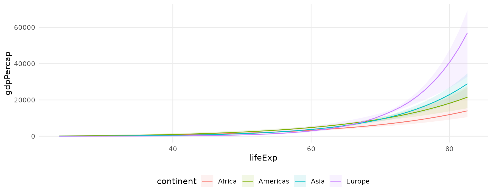
Extract draws with posterior_draws()
The posterior_draws() function extract raw samples from
the posterior from objects produced by marginaleffects.
This allows us to use richer geoms and summaries, such as those in the
ggdist package:
predictions(
mod,
re_formula = NULL,
newdata = datagrid(model = mod,
continent = gapminder$continent,
year = c(1952, 2007),
lifeExp = seq(30, 80, 1))) |>
posterior_draws() |>
ggplot(aes(lifeExp, draw, fill = continent, color = continent)) +
stat_lineribbon(alpha = .25) +
facet_grid(year ~ continent)
Average Contrasts
What happens to gdpPercap when lifeExp
increases by one?
avg_comparisons(mod)
#>
#> Term Contrast Estimate 2.5 % 97.5 %
#> lifeExp +1 718.87 515.58 811.96
#> year +1 -63.82 -84.44 -41.05
#>
#> Prediction type: response
#> Columns: type, term, contrast, estimate, conf.low, conf.highWhat happens to gdpPercap when lifeExp
increases by one standard deviation?
avg_comparisons(mod, variables = list(lifeExp = "sd"))
#>
#> Term Contrast Estimate 2.5 % 97.5 %
#> lifeExp (x + sd/2) - (x - sd/2) 4050 3718 4741
#>
#> Prediction type: response
#> Columns: type, term, contrast, estimate, conf.low, conf.highWhat happens to gdpPercap when lifeExp
increases from 50 to 60 and year simultaneously increases
its min to its max?
avg_comparisons(
mod,
variables = list(lifeExp = c(50, 60), year = "minmax"),
cross = TRUE)
#>
#> C: lifeExp C: year Estimate 2.5 % 97.5 %
#> 60 - 50 Max - Min 1001.5 522.5 1330
#> 60 - 50 Max - Min 1001.5 522.5 1330
#> 60 - 50 Max - Min 1001.5 522.5 1330
#> 60 - 50 Max - Min 1001.5 522.5 1330
#> 60 - 50 Max - Min 1001.5 522.5 1330
#> --- 1670 rows omitted. See ?print.marginaleffects ---
#> 60 - 50 Max - Min 466.9 112.6 1299
#> 60 - 50 Max - Min 466.9 112.6 1299
#> 60 - 50 Max - Min 466.9 112.6 1299
#> 60 - 50 Max - Min 466.9 112.6 1299
#> 60 - 50 Max - Min 466.9 112.6 1299
#>
#> Prediction type: response
#> Columns: rowid, type, term, contrast_lifeExp, contrast_year, estimate, conf.low, conf.high, predicted, predicted_hi, predicted_loPlot draws from the posterior distribution of average contrasts (not the same thing as draws from the posterior distribution of contrasts):
avg_comparisons(mod) |>
posterior_draws() |>
ggplot(aes(estimate, term)) +
stat_dotsinterval() +
labs(x = "Posterior distribution of average contrasts", y = "")
Marginal effects (slopes)
Average Marginal Effect of lifeExp on different scales
and for different parameters:
avg_slopes(mod)
#>
#> Term Estimate 2.5 % 97.5 %
#> lifeExp 718.71 515.56 811.70
#> year -63.82 -84.44 -41.05
#>
#> Prediction type: response
#> Columns: type, term, estimate, conf.low, conf.high
avg_slopes(mod, type = "link")
#>
#> Term Estimate 2.5 % 97.5 %
#> lifeExp 0.08249 0.07419 0.088564
#> year -0.00937 -0.01201 -0.006316
#>
#> Prediction type: link
#> Columns: type, term, estimate, conf.low, conf.high
avg_slopes(mod, dpar = "hu")
#>
#> Term Estimate 2.5 % 97.5 %
#> lifeExp -0.008171 -0.009367 -0.006687
#> year 0.000000 0.000000 0.000000
#>
#> Prediction type: response
#> Columns: type, term, estimate, conf.low, conf.high
avg_slopes(mod, dpar = "hu", type = "link")
#>
#> Term Estimate 2.5 % 97.5 %
#> lifeExp -0.09934 -0.1132 -0.08382
#> year 0.00000 0.0000 0.00000
#>
#> Prediction type: link
#> Columns: type, term, estimate, conf.low, conf.highPlot Conditional Marginal Effects
plot_slopes(
mod,
effect = "lifeExp",
condition = "lifeExp") +
labs(y = "mu") +
plot_slopes(
mod,
dpar = "hu",
effect = "lifeExp",
condition = "lifeExp") +
labs(y = "hu")
Or we can call slopes() or comparisons()
with posterior_draws() function to have even more
control:
comparisons(
mod,
type = "link",
variables = "lifeExp",
newdata = datagrid(lifeExp = c(40, 70), continent = gapminder$continent)) |>
posterior_draws() |>
ggplot(aes(draw, continent, fill = continent)) +
stat_dotsinterval() +
facet_grid(lifeExp ~ .) +
labs(x = "Effect of a 1 unit change in Life Expectancy")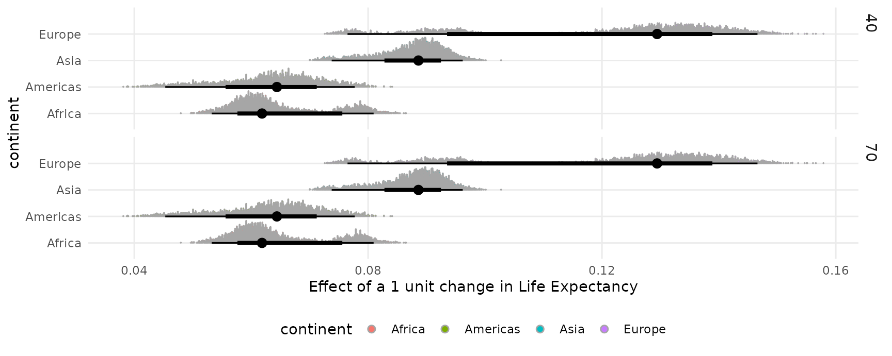
Bayesian estimates and credible intervals
For bayesian models like those produced by the brms or
rstanarm packages, the marginaleffects package
functions report the median of the posterior distribution as their main
estimates.
The default credible intervals are equal-tailed intervals (quantiles), and the default function to identify the center of the distribution is the median. Users can customize the type of intervals reported by setting global options. Note that both the reported estimate and the intervals change slightly:
library(insight)
library(marginaleffects)
mod <- insight::download_model("brms_1")
options(marginaleffects_posterior_interval = "hdi")
options(marginaleffects_posterior_center = mean)
avg_comparisons(mod)
#>
#> Term Contrast Estimate 2.5 % 97.5 %
#> cyl +1 -1.500 -2.385 -0.6771
#> wt +1 -3.206 -4.704 -1.5704
#>
#> Prediction type: response
#> Columns: type, term, contrast, estimate, conf.low, conf.high
options(marginaleffects_posterior_interval = "eti")
options(marginaleffects_posterior_center = stats::median)
avg_comparisons(mod)
#>
#> Term Contrast Estimate 2.5 % 97.5 %
#> cyl +1 -1.494 -2.361 -0.6361
#> wt +1 -3.195 -4.792 -1.6450
#>
#> Prediction type: response
#> Columns: type, term, contrast, estimate, conf.low, conf.highRandom variables: posterior and
ggdist
Recent versions of the posterior, brms, and
ggdist packages make it easy to draw, summarize and plot
random variables. The posterior_draws() can produce objects
of class rvar which make it easy to use those features by
returning a data frame with a column of type rvar:
library(brms)
library(ggdist)
library(ggplot2)
library(marginaleffects)
mod <- brm(mpg ~ am, data = mtcars)
p <- predictions(mod, by = "am")
rvar <- posterior_draws(p, shape = "rvar")
rvar
#>
#> am Estimate 2.5 % 97.5 %
#> 0 17.12 14.91 19.36
#> 1 24.39 21.56 27.07
#>
#> Prediction type: response
#> Columns: type, am, estimate, conf.low, conf.high, rvar
ggplot(rvar, aes(y = am, xdist = rvar)) +
stat_slabinterval()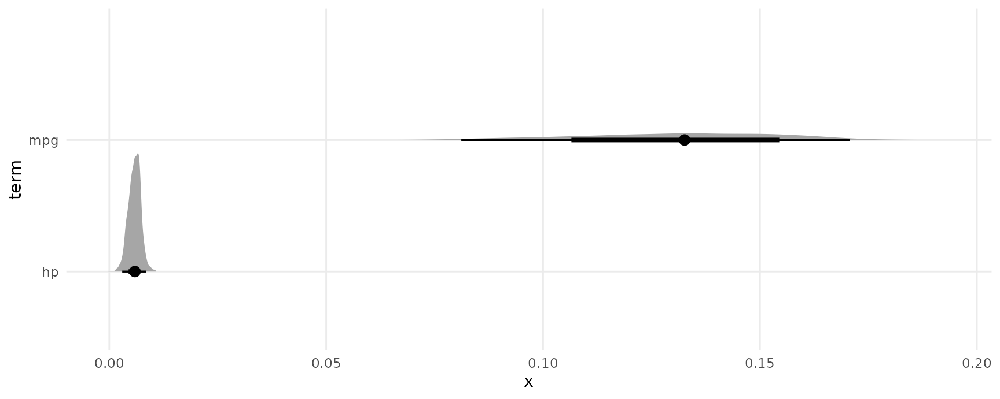
Non-linear hypothesis testing
We begin by estimating a model:
mod <- brm(am ~ mpg + hp, data = mtcars, family = bernoulli(),
seed = 1024, silent = 2, chains = 4, iter = 1000)Notice that we can compute average contrasts in two different ways,
using the avg_comparisons() function or the
transform_pre argument:
avg_comparisons(mod)
#>
#> Term Contrast Estimate 2.5 % 97.5 %
#> hp +1 0.005987 0.002884 0.00886
#> mpg +1 0.135474 0.078713 0.17472
#>
#> Prediction type: response
#> Columns: type, term, contrast, estimate, conf.low, conf.high
comparisons(mod, transform_pre = "differenceavg")
#>
#> Term Contrast Estimate 2.5 % 97.5 %
#> mpg mean(+1) 0.135474 0.078713 0.17472
#> hp mean(+1) 0.005987 0.002884 0.00886
#>
#> Prediction type: response
#> Columns: type, term, contrast, estimate, conf.low, conf.high, predicted, predicted_hi, predicted_loNow, we use the hypothesis argument to compare the first
to the second rows of the comparisons() output:
comparisons(
mod,
transform_pre = "differenceavg",
hypothesis = "b2 - b1 = 0.2")
#>
#> Term Estimate 2.5 % 97.5 %
#> b2-b1=0.2 -0.3298 -0.3666 -0.2748
#>
#> Prediction type: response
#> Columns: type, term, estimate, conf.low, conf.highThe hypotheses function of the brms package
can also perform non-linear hypothesis testing, and it generates some
convenient statistics and summaries. This function accepts a D-by-P
matrix of draws from the posterior distribution, where D is the number
of draws and N is the number of parameters. We can obtain such a matrix
using the posterior_draws(x, shape = "DxP"), and we can
simply add a couple calls to our chain of operations:
avg_comparisons(mod) |>
posterior_draws(shape = "DxP") |>
brms::hypothesis("b2 - b1 > .2")
#> Hypothesis Tests for class :
#> Hypothesis Estimate Est.Error CI.Lower CI.Upper Evid.Ratio Post.Prob Star
#> 1 (b2-b1)-(.2) > 0 -0.07 0.02 -0.12 -0.04 0 0
#> ---
#> 'CI': 90%-CI for one-sided and 95%-CI for two-sided hypotheses.
#> '*': For one-sided hypotheses, the posterior probability exceeds 95%;
#> for two-sided hypotheses, the value tested against lies outside the 95%-CI.
#> Posterior probabilities of point hypotheses assume equal prior probabilities.